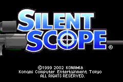
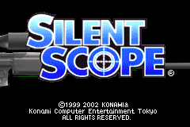

Silent Scope (Japan)
EEPROM 4K
Cartridge Identity
- Game Code
AIPJ(FamilyAIP)- Header Title
SILENT SCOPE- Maker / Revision
EM/ rev0- ROM Size
- 8.0 MiB (8,388,608 B)
- Save Media
EEPROM 4K- SHA-256
0d2305bcb4bbb26961d1a316bcb791b242cc878127abcc264a15f254505e5483
Screenshots


Observed Battery Save Layout
- Fill Byte & Active Size
0x00fill · 212–212 / 512 B active (entropy 4.64 bits/B)- Active Offset Ranges
0x0–0xB,0xD–0xF,0x11–0x18,0x1B–0x1C,0x1E–0x1F,0x27–0x2B,0x34,0x36, +8 more (45 total)- ASCII Magic / Headers
aS_sS- Observed Variable Regions
- 0 bytes across 0 spans: None
- Candidate Checksum/Counter Spans
- None
Hardware MMIO Subsystems
ppu_display0x804f018,0x804f714
Regional Variants & Revisions (Family AIP)
- Silent Scope (Europe) (En,Fr,De,Es,It) (
AIPP, 8 MiB) - Silent Scope (USA) (En,Fr,De,Es,It) (
AIPE, 8 MiB)